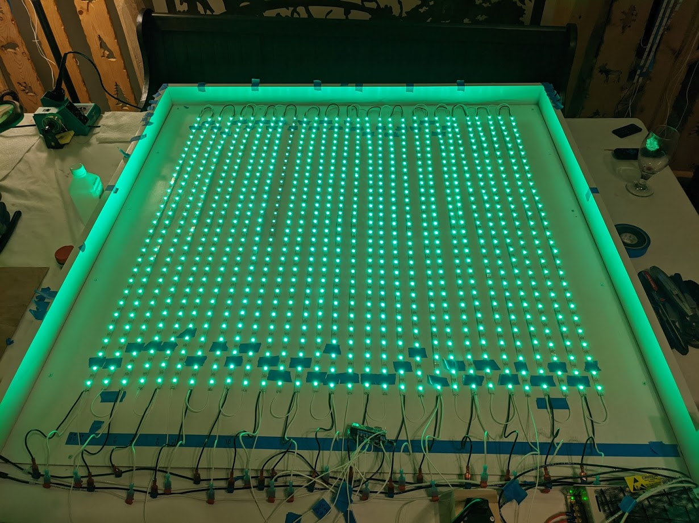
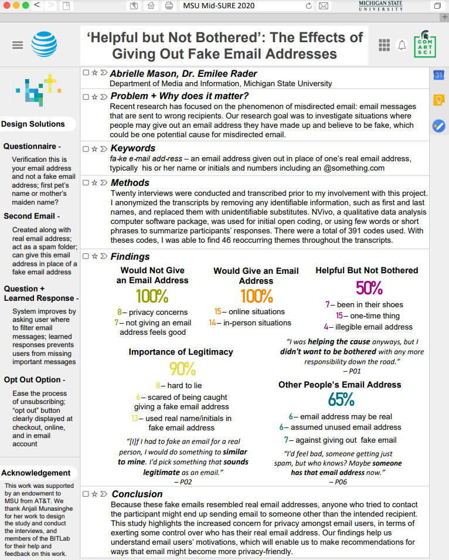
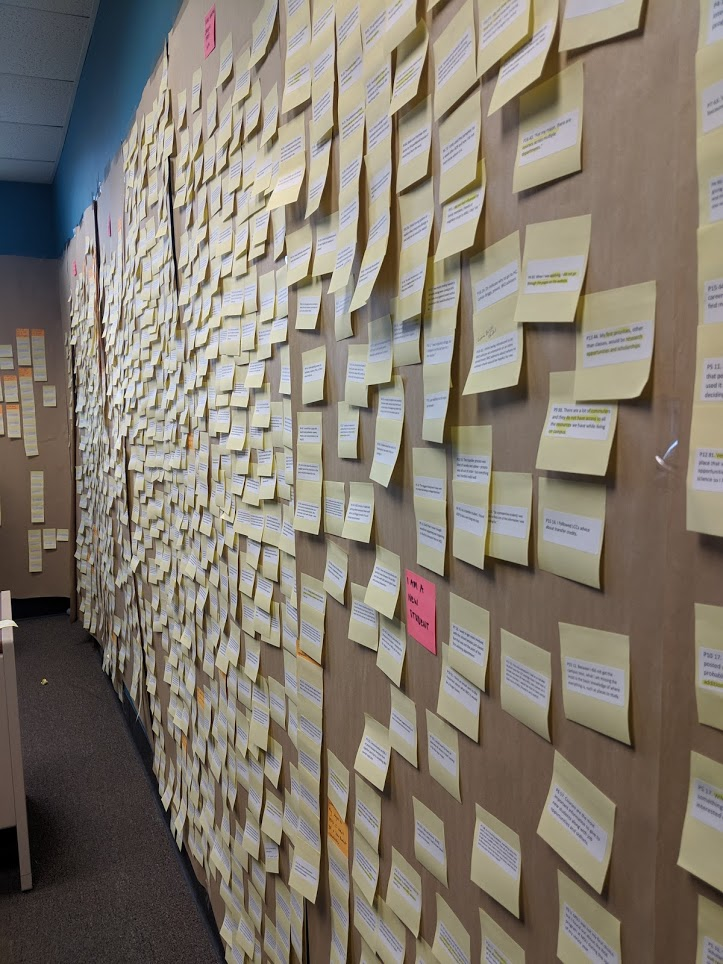
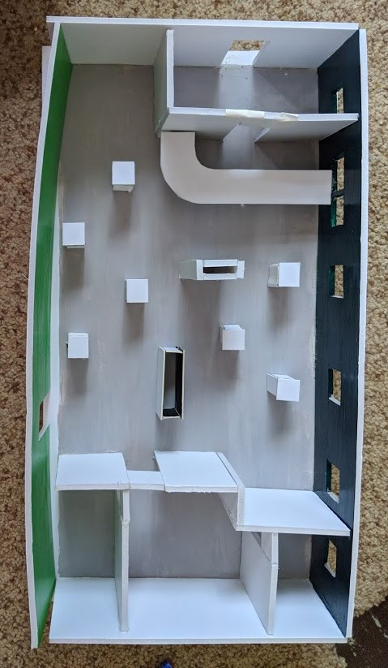

PORTFOLIO
Independent Project: Interactive LED Board
Designing a multipurpose interactive light display for a unique user experience
Location: Michigan State University, Independent Study
Date: Sept 2020 - Present
Collaborators: Nick Kopec (Technical Lead), Dr. Andrew Mason (Supervisor)
My role: Project Lead, UX Design, Physical Construction Design
The Challenge: How can one visualize the senses through light?
How can LED lights best display one’s interactions with sensors using the senses, such as sound, motion, and heat?
The goal of this project was to explore the vast possibilities of interaction with LED lights. Some of these possibilities included transcribing 30x30 pixel images, detecting distance using ultrasonic sensors, detecting sound using microphone sensors and finally to display informaiton using a Teensy 4.1.
I helped initiate, designed, and led this project for the benefit of those who enjoy interactive light displays. This project was inspired by Cyberdog, a store in Camden Town District of London, WNDR Museum in Chicago, Illinois, and other unique light displays I have come across while traveling.
Design Process
Ideation: Brainstorming unique user experiences. How are the LED lights going to be displayed? What parts do we need? How can we make all the parts work together?
Design: Constuction of the physical display board. Designing pixel images. Installing and testing sensors.
Conclusion: Broader implications. Limitations. Future Work.
Ideation
Brainstorming - I have always been interested in music and lights, especially the combination of both in music festivals and Christmas light shows. I thought it would be interesting to build a wall of lights that could show the range of music in the form of an equalizer. When I visited Cyberdog in Camden Town, London, I was fascinated by their large LED equalizer that spanned the wall behind the DJ booth. At the WNDR museum in Chicago, I enjoyed watching the floor light up as I stepped acros to get to the other side. I also experienced a wall depicting my movements using a heat sensor and projector. I then thought, "Wouldn't it be cool to have all these components together on a large set of LEDs?" That idea was shared with Dr. Mason and Nick. As we discussed it, they both agreed it would be a unique and interesting project and decided to help me persue my idea.
Parts - What parts are we going to need for this project? How much should we invest in this project?
First and foremost, we had to decide what parts we were going to need to complete this project. We wanted to use sensors but had to decide which were worth investing in and how many were reasonable to have working by December. We also had to think about how close we wanted the LEDs to be to one another. We had to think of what we needed to construct the board for the lights to be displayed on as well.
Layout Design - The first major issue we needed to solve is how big we were planning to make this light display. After multiple discussions, we decided to go with a 4x5 foot wooden display, something similar to a Polaroid photo layout but much bigger. We also decided to use a total of 900 LEDs, which ended up being extremely bright even at 50% brightness. We designed the board to be longer than it was wide because we wanted to store the power supply, Teensy, switches, sensors, and wires all below the lights to allow easy access for maintenance and controls.
Function Design - How are all the parts going to work?
I soldered power, ground and data to each strip of lights and soldered each strip of lights to the next. The strips were then attached to the board usinga combination of tape and glue. Next, the power and ground were attached to busses that connected directly to the power supply which in turn was hooked up to a power switch. Data was connected to the Teensy, which was given commands via an SD card. The sensors were also connected to the Teensy.
Design
Physical Construction - The board was assembled by Dr. Mason and myself. We constructed a wooden board using screws and painted it white to help enhance the light of the LEDs. We used plywood as the backboard for the LED strips to attach to later on. We had to add a supprt beam down the middle of the plywood backboard due to beveling. The sides were left longer at the bottom to accomodate the many working parts that would be situated within that section of the board.
Designing Digital Images - How can I make realistic images of something using a 30x30 pixel grid? How can I show change?
What image would you like to see displayed by LEDs? That was the first question I had to ask myself. I originally wanted to see a palm tree swaying in the wind, however, that later proved to be more difficult than I thought. I uded Paint.net to create a 30x30 grid. Each pixel represented an LED on the board. You might think 900 pixels is a lot but once you start trying to construct an image with only 900 pixels, it quickly becomes much smaller than you anticipated. My first design was a basic pattern - an X that changes into a square, and a square that fills the whole board. Next, I tried a firework starting at the bottom, moving to the top, and exploding into a lovely array of lights. Then I tried a Christmas tree with Christmas lights that flickered on and off. My hardest works were a sunrise over a valley and a sunset over the ocean. What I saw in the 30x30 pixels on my laptop were very different when they were displayed using the LED lights. Larger images were much easier to recognize.
Installing + Testing Sensors - Where will the sensors be placed? How can we eliminate discrepencies?
Once the board was constructed and LED strips were attached, sensors needed to be added to the board. We were careful not to place them in locations where interference would disrupt their capabilities. For example, we designed a 3D printed box for the microphones and ultrasound sensor.
Conclusion
Broader Functionality - This project was designed to have more functionality than what Nick and I were able to contribute to the LED light display. More sensors could be added to give users more ways to interact with the light board. This is not your ordinary equalizer.
Limitations - Some of the limitations we faced were inexperience, shorting wires, time constraints, and limited man hours. In the earlier weeks of the project, I learned how to solder wires together for the first time ever. I eventually got the hang of it, however, it took longer than expected. After all the wiring was completed, we had a small incident where a set of wires were short circiuted in which case I had to pull the wires and replace them with new ones. We were able to salvage some of the damaged wires. After we had the board constructed and the lights properly running a simple test, we only had a few weeks to complete anythign else we hoped to complete. Of course both Nick and I were interested in working beyond our time frame to see what else we could get done with this project and opted to continue work into the spring. However, it became much harder to continue work with finals coming up.
Future Work - This project is a continuous work for future students to invest their time and talents. The project was designed to see how far we could get for now and have some working interactive sensors but ultimately be flexible. The light display has much room for improvement. I am continuing my efforts to add and test more sensors to see how we can display other avenues, such as heat or UV detection. This project has come a long way since the initial ideation phase but has a ways to go before it could be sold to mass markets.
Mid-Sure 2020 - Research on Email Addresses
Location: Michigan State University, Behavior, Information, and Technologies Lab
Date: June 2020 - Aug 2020
Collaborators: Anjali Munasinghe, Dr. Emilee Rader
Goal: The goal of this project was to take existing data, analyze it, and present the best findings to Mid-SURE. The research topic was focusing on people's willingness to give out an email that was not their own and maybe not knowing they could potentially be giving out someone else's email address and unintentionally spamming them with junk mail.
Roles: My roles for this project included transcribing previously recorded interviews, anonymize the participants, create codes - short titles for reoccuring topics - in NVivo, analyzing the transcriptions on NVivo, organizing the findings in order of relevance and popularity, writing a report on my findings, designing a poster summarizing these findings, and finally presenting these findings via video format.
Outcomes: The outcomes were somewhat all over the place. As you can see on my poster here, there were a number of cases where it was merely a tie between doing something one way or the other. The findingers were particularly interesting, however, because there are many people who receive emails from someone or a company that the person receiving has no affiliation and we found that some people could be responsible for this occurrance. It was a very interesting find to say the least. You can watch my presentation here.
What I Learned: Some key takeaways were that most people dislike being asked to give out an email address and at the same time people also feel compelled to provide an email address because they feel they are helping someone else in doing so. Some new skills I gained from this experience was how to create codes in NVivo, filtering out irrelevant findings, how to design a poster that resembles an email inbox, and how to record and create videos usign Camtasia.
Case Study: Helping MSU Integrative Biology Students Succeed
Supporting student success at Michigan State University with a human-centered website redesign
Location: Michigan State University, Independent Study
Date: Jan 2019 - May 2019
Collaborators: Katie Oeschger (Supporting UX Researcher)
My role: Project Lead, UX Research, Content Design
The Challenge: What do students need to succeed?
How can university units be assured that their ever-changing student body is receiving the resources that students actually need?
The department of Integrative Biology (IBIO) is home to more than 500 students majoring in Environmental Biology-Zoology, Integrative Biology, or Zoology. To help the greatest number of students, the department needed to become more strategic with its limited time and resources. The goal of this project was to understand what challenges department majors encounter and how to help these students achieve their academic and career goals.
I helped initiate, designed, and led this project for the Department of Integrative Biology at Michigan State University. This project was approved by Michigan State University's Institutional Review Board.
Design Process
Discovery: What current resources exist? How do students use the website? Talking with real users. Device usage. Synthesizing interview data. Who makes up the student body? What is the student experience like?
Ideation: Brainstorming solutions. Are competitors already implementing these ideas? Design recommendation.
Design: Improving usability & findability. Preliminary design ideas.
Conclusion: Broader implications. Limitations. Future work.
Discovery
Content audit + card sort - What current resources exist?
The undergraduate section of the Integrative Biology Website included 43 webpages, nine of which were listed under the main navigation. The older webpages were very text heavy. The information architecture and user interface needed improvement.
In the past year, only one new page was added, the Hands-On Opportunities Database. This database was developed based on real user needs.
To understand how to restructure the website's information architecture, we asked students to complete a card sort activity. Each student participant was handed a stack of index cards (i.e., each card represented a page in the undergraduate section of the website) and asked to sort the cards in a way that makes sense to him/her. The purpose of this activity was to understand their mental models of the website's information architecture.
Card sort data were analyzed by looking for themes and patterns.
Web analytics - How do students use the website?
One way to understand how people were using the website was to review the Google Analytics data. I evaluated the top-visited pages, landing pages, exit pages, bounce rates, and the content drill down. I found similar patterns in the data across multiple years.
The data suggested that users primarily accessed the website with their computer using Google. They used the search engine to go directly to the webpage of interest, circumventing the Homepage. These findings were later corroborated during student interviews. The top visited webpages are listed below.
PUT THIS IN A LIST PLEASE: 1) undergrad degrees, 2) advising, 3) overrides, 4) undergrad program, 5) hands-on opportunities database.
Student interviews - Talking with real users
My empathy and interpersonal skills have been exceptionally useful to build rapport with users quickly and collect valuable data. We interviewed 15 students from the Integrative Biology student body who met our participant profile. These participants were diverse across class standing, majors, gender, etc. We continued interviewing students until we reached the point of data saturation.
During these interviews, we sought to understand topics such as: -How do students get the information they need for their majors? - Academic and career exploration challenges. - What MSU correspondence do they read? - Communication preferences. - User feedback on potential web design ideas and student resources that were currently in development.
The interviews were audio-recorded and transcribed into affinity notes. The data were analyzed using flow models and an affinity diagram.
Flow models - Device usage
Flow models were created during each interview debriefing. Flow models were a quick, visual overview of the user's interview data. The sample flow models accompanying this text show a visual representation of communication mediums used by a student, how he/she used them, the relationships between these mediums, and relevant pain points (designated with an X).
In general, students prefer to use a computer for academics. This finding was corroborated by web analytics. Students use their smartphones to look up quick information while they are on the go.
Affinity diagram - Synthesizing interview data
Interview data were analyzed using an affinity diagram, a hierarchical grouping of affinity notes. We selected an affinity diagram because: - It was an effective way to organize information across users to show common themes, challenges, and needs. - All data could be viewed in one place. - An affinity diagram allowed us to see patterns and themes in the data without losing the individual variation.
The affinity diagram was comprised of ~1,500 affinity notes (note: the photo only shows half of the completed affinity diagram). Key insights from the affinity diagram are listed below.
Themes for user data
Students are overwhelmed when they are provided too much information. It’s hard for students to use websites with too much information. They only want information that is directly relevant to them. Poor content organization and formatting are a turnoff for students. For example, they get burned out reading a bunch of text on a webpage. Instead, they prefer visuals. Students also reported that they get confused if there are too many pages or navigation options to choose from. They prefer simple, and easy to use websites.
Students have a hard time finding the information they need. Students only look for information when they need it. Students struggle to find the information they need because they either: - Don’t know where to go from information. - Don’t know what to search for. - Don’t know how to piece information together. - Don’t want to dig through a bunch of content to find the information they need.
Students find it helpful when information is consolidated. They like having all the information they need in one place. For example, students would like each major to have its own webpage which provides resources specific to that major (e.g., complimentary minors, careers, jobs, etc.). They also find hyperlinks very helpful.
Students don’t know what major is best for them. Students explore majors by comparing curriculums online. They would like more information about the majors online to help them determine which major is the best fit for them.
Students have a hard time connecting their major to a career path. Although students have begun career exploration, they don’t know what to do with their degree. They want to know what type of careers they can have with each curriculum, possible entry level jobs they can pursue, and the skill sets they need for these positions. They don’t understand graduate school. IBIO Students like to read examples of what their peers are doing with their major (or have done in the past). They said it would be helpful if there were stories about what alumni have done with their degree. They are also interested in learning about the career trajectories of their professors.
The best way to communicate with students via email. Students reported that they check their email at least one time per day. The subject line and who the email is sent from dictates whether they open it; they open emails related to their academics. The students like the IBIO Student eNewsletter and its current distribution schedule. => IBIO students don’t want to see school-related stuff on social media, and they don’t check the department website regularly.
Ideation
Sketching - Brainstorming solutions
We generated more than 200 design ideas from user data. Sketching was used to brainstorm, capture, explore, and communicate my ideas. Ideas ranged from hosting student assemblies (with optional live streaming) or redesigning the curriculum to website enhancements. Design ideas were prioritized.
Competitive analysis - Are compedtitors already implementing these ideas?
I conducted a competitive analysis to get a better understanding of how MSU's Department of Integrative Biology's web presence compared with its namesake competitors across the United States. Only ten departments with the name 'Integrative Biology' were identified. All ten were included in the competitive analysis. The features compared across the websites were based on user data and potential design ideas for this project.
Findings suggest that most Integrative Biology Department websites provide their students with sample course plans and a course list, two areas where MSU is lacking. In general, these websites included very basic information for undergraduates and either limited to zero information about career preparation (a high priority topic to department undergraduates). None of the websites included in the competitive analysis had modern web designs. Similar to MSU's current IBIO website, these websites were text-heavy and provided limited visuals. Overall, I discovered that many of my design ideas generated from the affinity diagram have not been implemented by MSU's competitors.
Recommendation: A website redesign
A website driven by human-centered design is a powerful tool that had not been fully leveraged by the Department of Integrative Biology. The few webpages that were created based on user needs in the past have been very successful.
Redesigning the website (e.g., information architecture, content, and design) was the first step to bolster the academic and career success of department majors. The data suggested that students rely on the website as a reference. Improving the website could reduce the cognitive load of users and create an easy to use, informative, and enjoyable user interface for students. Providing students with useful, online resources could also help reduce the overwhelmed advising workload and serve as helpful artifacts for advisors to reference during advising appointments.
Enhancements began with high priority features that students could not find elsewhere.
Design
Sitemap - Improving usability & findability
Using student data, the information architecture and content organization of the website (i.e., the undergraduate section only) were redesigned to align with students' mental models. The total webpages were reduced from 43 to 27, and every webpage can be reached in 3 clicks or less.
Content design - preliminary design ideas
I began designing the website with a paper prototype because it was a quick way to work out our design ideas. I rewrote all the headers and web copy to be simple, and straightforward. More than 50% of the old web copy was eliminated.
Scans of the paper prototype were uploaded into MarvelPop, a tool that makes sketches interactive like a real website. I conducted moderated usability testing with ten students who were pursuing majors offered by the Department. => Overall, student feedback was positive. Students reported that the prototype was much easier to navigate than the pre-existing website (average student usability rating was 8.1 of 10). In fact, one student said, "I really like it. I want to use it right now. It's a lot easier for arranging my internship."The average completion rate across scenarios was 73%.
The big takeaway was that some of the designs included too much text. Feedback was incorporated into the next iteration of the prototype.
Conclusion
The findings suggest that students in the Department of Integrative Biology struggled to find the information they need for their major and career preparation. These students were overwhelmed by excessive information and they struggle to synthesize information. They want content directly relevant to their academics and career interests
Students were really excited about new features that emerged from our research insights. For example, one new feature is a webpage that compares, in detail, all the department majors. A usability participant commented, "That's perfect. That's what I always wanted. It would save me hours." Students also liked that many academic resources that could only be accessed in person will also be available online. The impact is threefold: (1) access to critical major information will be more equitable and accessible to all students, (2) students will have more options for academic support to accommodate their needs and lifestyles, and (3) decrease the demanding workload of academic advisors.
Overall, student feedback was very positive. In fact, one student asserted, "It's what I hoped it would be." When students were asked how likely they would recommend this new website to a fellow student in their major (during usability testing), their average rating was a 9.5 out of 10, with 10 being the highest score possible.
Most surprising and complimentary was the noted comparison of this new design with other websites across the Michigan State University campus by students and colleagues. A student mentioned, "If I had this, school would be easier. It's way more user friendly than any other MSU website. It has everything you need from starting here, classes, to find careers. It would be great for other majors across campus." Meanwhile, an academic advisor (from another unit) who happened to see the prototype told me, "I've seen a lot of webpages in my nine years of advising at MSU. This one is by far the best I've seen."
Broader implications
The implications of this project extended beyond what was initially expected. The data, findings, and design ideas generated from this project: - Helped guide the department's strategic planning. - Was used as evidence of the department's commitment to student success in Integrative Biology's [undergraduate] annual program report that has been reviewed by the College of Natural Science's leadership. - The data fostered the development of a new freshman course that has been incorporated into the department's undergraduate curriculum. This new course connects students with peers and department faculty sooner in their academic careers.
We also discovered that Integrative Biology has been doing some things well: - All the participants really liked the IBIO Student eNewletter. - Students have found the IBIO Hands-On Opportunities Database to be useful. Enhancements were suggested to make this database even more useful and easier to use.
Limitations
Like any study, there were limitations. For example, you can only learn so much from interviews. What people say and what they do don't necessarily align. For example, some students said they used FAQs, but then they contradicted themselves later in the interview. If I could do the project over again, I would have supplemented the interviews with a diary study to better capture needs and technology usage. => Another limitation of the project was that students were only recruited using email. In the future, we should also recruit students by making announcements in MSU classrooms. It is possible that our results may have been biased towards students that read their email.
Future work
In the future, I plan build the high-fidelity prototype in the department's content management system using HTML & CSS. Once a final product is launched, then lower priority design ideas can be explored.
Additionally, I would like to conduct a parallel project with the department's graduate students. I've reviewed the Google Analytics data for the graduate webpages, but I want to dig deeper. How the graduate students currently use the Integrative Biology website and how they would like to use it (i.e., if changes were made) may not align.
Redesigning Physical Space - MSU Computer Center
Location: Michigan State University, AL 242 - Intro to Experience Architecture
Date: April 2018 - May 2018
Collaborators: MSU Computer Center Team
My Role: Project Lead, UX Research, Physical Prototype Design
The Challenge: How can we redesign the Computer Center's physical space to improve user flow and efficiency?
How can the current space be rearranged to allow easier flow for users? What changes can be made to increase efficiency? How can we accomplish these goals on a low budget?
The Computer Center is located at the heart of Michigan State University next to the Hannah Administration Building. With a prime location for students, faculty and staff, it was shocking to find out fewer people were coming to use the Computer Center for technology repairs, buying electronic devices, or even testing out the latest devices, video games, and sound systems on the market. Our goal was to help invite more customers into the store and use their services.
I researched, observed, designed, and built a prototype of the Computer Center's physical space and presented my prototype to the Computer Center Team for feedback.
Design Process: The Double Diamond
The Problem: At a first glance, what does the problem appear to be?
Design the Right Thing: Start with research. Discover how users interact with the space. Explore opportunities for improvement. Define the major pain points.
Problem Definition: After further investigation and research, what does the actual problem appear to be?
Design Things Right: Develop a prototype. Test the prototype with the users. Deliver results. Listen to user feedback.
Conclusion: Constraints. Future work.
The Problem
The Computer Center Team said they were having trouble marketing their store and getting people to stop by the store for repairs or pruchasing devices. Those who did stop buy expressed satisfaction when receiving their repaired devices, however, not many people were buying in-store products. Could redesigning the space increase the number of customers and the amount of foot traffic through the store? The Computer Center Team was willing to let me try and find solutions to the problems they were facing.
Design the Right Thing
Research - Initially, the Computer Center Team asked me to redesign their physical space. I stopped by the store a few times to see the space for myself. I talked with the manager about the problem of little to no foot traffic and few pepople purchasing in-store products. He gave me a grand tour of the space and gave me a copy of the blueprints. We discussed the biggest limitations, including physical structure constraints, a maximum budget, and sections of the store that were not to be included in the redesign.
Discover - After learning what I could from the manager, I came back during different times and days of the week to observe customers using the store. I watched for what products were being tested and bought the most by customers. I also noticed there was a corner of the store where few customers visited. Some customers looked overwhelmed by the amount of products the store had on display. There were two doors but only one was used for incoming and outgoing customers. There was little lighting and a few small windows on one wall. The space seemed quite cramped for the purposes it was trying to serve.
Explore - The first solution I thought would improve the customer experience was to remove and declutter the products. The iconic Apple store's design focus on simplicity would be a great fit for this store. Have a few products on display. Store boxed products in a storage room or hide them under the product display in a cabinet. Remove unnecessary products, such as non-tech related Michigan State merchanidise, and limit the number of shelves and display tables in the store. Lastly, LED lighting across the ceiling and brighter wall colors would improve the visibility tremendously.
There were a few solutions that took further time and thought to discover. For example, a wall and countertop could have been removed to create a bigger open concept layout. The IT repair help desk could be removed entirely to encourage more one-on-one interaction between the IT specialists and customers. Replacing the outdated carpet with a light wood laminate would brighten up the place and make it much easier to clean. Lastly, restoring the use of the second door would allow more foot traffic to enter in one door, drop off a device to be repaired, explore the store's products, and exit the second door located near the checkout desk after purchasing a few products.
Define - After interacting with the Computer Center Team and observing their customers, I concluded that the major pain points included too many products for a small space causing an overwhelmmed feeling, minimal lighting making it hard to see, conngested foot traffic, and less inviting to ask for help when the team was behind a desk rather than roaming the store.
Problem Definition
After my investigation, the problem was no longer the customer but rather the space. It was true that customers were mostly using the sapce for IT repairs, however, the problem was with the use of space. Customers were overwhelmed and less likely to ask for help due to the layout of the space. It was not the customer nor marketing that was letting the Computer Center down; it was its own store.
Design Things Right
Develop - Now that I understood the problem, it was time to put my suggested solutions to the test. I decided to use the blueprints to downscale the physical space to a 12:1 ratio. I used styrene sheets for the walls, making sure to cut out where the windows, doors and archways were located. I also used some cardboard for the construction of the checkout counter. I removed unnesessary walls and the IT repair counter to allow for more space. I had to leave any supporting beams due to the store being on the lowest level of a four story building. I removed most of the obtrusive display tables and movable shelves.
I went with a hunter green along the back wall with windows as a place to highlight products on wall mounts. I mimiced a laminate floor with a MSU-approved light grey color to capture and reflect sunlight coming in from the windows and LED light coming down from the ceiling. I picked a MSU-approved neon green for the wall with the two main doors to also reflect sunlight and LED lights back into the room. I left the other walls, counters and tables white to lighten up the room. Because I was inspired by the Apple stores, I designed portable display tables to showcase one product and store purchasable versions of the same product below. By being portable, the Computer Center team could move products around on the laminate floor to promote items or replace the display product quickly and easily by moving them to the storage rooms.
One other thing I had to consider was the budget of $10,000 the Computer Center gave us at the start of this project for the redesign of their space. Fortunately, I was mostly planning to remove unnesessary walls, counters and products. I did have to consider the cost of paint, new flooring, new lighting, man hours, and renting a large dumpster. I discovered it would be possible to separate existing cabinets, which would be reused for the portable display tables. Some of the drywall could be cut to cover existing support beams and air vents. Even after calculating an estimate for the expenses, it was still well below the $10,000 budget.
Test - Once I had my prototype assembled and painted, I had a small focus group of four users ranging in ages 15 to 75 try it out using miniature toy people to "walk through" the store. Participants particularly enjoyed being able to move the display tables around and liked the color scheme. One participant looked through the main door with his eye to get a "real" view of the first impression of the space. Three of the four participants used the second door to exit the store.
Deliver - I presented the prototype to the Computer Center Team along with a report on the research I conducted at their store. They were surprised to see that the actual problem was the density of their products in a small space and not a lack of customers. They were quite pleased with my design and even more pleased the redesign would cost less than the $10,000 budget.
Listen - One of the Computer Center Team's major concerns was reducing the amount of products in the store. They agreed that the color scheme, laminate flooring, and brighter LED lighting would brighten up the place and make it much more inviting. One team member liked the idea of removing the IT repair desk because it allows the IT team to initiate more face-to-face interaction with the customer. The idea of having a separate space to work on IT repairs and organize finished and unfinished repairs was very appealing to the Computer Center team. They also really appreciated the ability to move the display tables around and restock products easily by taking the display table with them to the storage room. Overall, they were quite pleased with my design.
Conclusion
Constraints - The biggest constraints for this project were Computer Center Team's $10,000 budget for improving the physical space, the small time frame to complete the project, and out-of-pocket cost to build a prototype as a college student. I was able to tackle these constraints although it took quite a bit of creativity to come up with a way around the $10,000 budget and reuse of materials. I also enjoyed finding cheaper resources that would allow me to make a prototype to highlight the redesign suggestions.
Future Work - Unfortunately, I was told after I presented my prototype to the Compter Center Team that they were already planning to move to a different building the following fall semester. That being said, the Computer Center Team was really pleased with my work and would consider using some of my design suggestions in their new store.